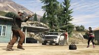

In Twist, moeten de teams een universeel pakket (s) te verzamelen (tenzij anders vermeld) gelegen in één van beiden, een bezet gebied, bestaande uit AI of onbezet gebied. In plaats van elk team heeft zijn eigen pakket en met de verpakking van het andere team te vangen, moet elk team strijden om het pakket te beveiligen en neem het terug naar hun basis. Zodra het pakket opgevangen en aangebracht, men respawnen op het aangewezen gedeelte van de kaart staat.
Net zoals Capture, voertuigen beschikbaar zijn om te gebruiken kampen heeft. Ze kunnen nuttig zijn voor uitjes zodra een speler stelt een pakket. Het pakket kan worden vernietigd als het water.
''